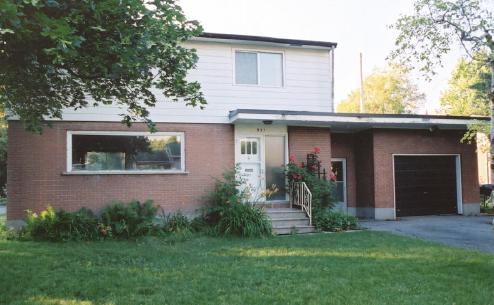

We Bought a House!

We finally bought a house on 28 June 2002, located at 951 Kincaid Court in
Ottawa. There are more pictures below. It's across the street from the house
we failed to buy in November of 2001, so we obviously
still like the location. The house needed a fair amount of work, but it was
priced accordingly, so we felt we could manage. We have been supervising contractors
and doing a lot of work ourselves, and some things are now done, but we still
have more ahead of us. Although most things have gone okay, the whole process
has been stressful and overwhelming. We really wish we could have bought a house
that didn't need this kind of work, but we couldn't find one we could afford.
Here are the basics:
- four bedrooms and a bathroom upstairs
- living room, dining room, and kitchen on the main floor
- a rec room, bathroom and utility room in the basement
- oversized attached garage
- big corner lot with mature trees
- oil heat, no air conditioning
Here's what we have done so far:
- removed carpets and had hardwood floors refinished
- had the main bathroom completely gutted and renovated (all that remains
to do is put up some kind of shelving thing on one wall)
- had the famous kitchen bench ripped out (see photo below) and replaced a
wall at the other end of the kitchen that had water damage from the bathroom
above - while we were having that done, we decided to have the countertop
and sink replaced and also replaced the existing dishwasher with the one we
brought from Madison
- had every window in the house replaced
- replaced three outside doors - two at the front and back of the breezeway
and the third connecting the house and garage (Dave did all three and still
has a bit of trim to finish on them)
- had the interior painted
- purchased new washer and dryer (we got a horizontal axis washer and a gas
dryer)
- had the rental electric water heater replaced with a non-rental gas water
heater
- Dave dug a big hole beside
the garage to diagnose a growing crack in the brick work. Then in the spring
of 2003 we had the foundation repaired, after removing a nearby tree that
likely contributed to the problem.
- Then we had the garage roof replaced.
- Then we had the soffits and fascia boards replaced.
- Then we got new gutters (eavestroughs, they call them in Canada) and downspouts.
- After a couple of years of work, we have finally replaced the front entry
door and added matching shutters.
Dave built a play structure for the kids in the yard. We also have lots of
landscaping plans, some of which are completed and others underway.
Here's what we would love to do next year (if we can stretch the finances that
far):
- new stoop, maybe with pillars
- new driveway
- new floor in the entryway and kitchen areas
- rework of the electrical system (the panel is all fuses and the kitchen
doesn't meet code, among other things)
- new furnace (to do our bit for reducing GHG emissions)
- maybe a new bannister for the staircase
Our new snail mail address is:
951 Kincaid Court
Ottawa, Ontario, Canada
K1V 6N6
Here are some pictures:
 Up to Our Family Home Page
Up to Our Family Home Page
Last Updated: 27 November 2022
WebMaster: Dave Shipley
dave@urbship.ca
© Copyright 2002-2022 David Urban Shipley
{kind=link}
{kind=link}
{kind=link}
{kind=link}
{kind=link}
{kind=link}
{kind=link}
{kind=link}
{kind=link}
{kind=link}
{kind=link}
{kind=link}